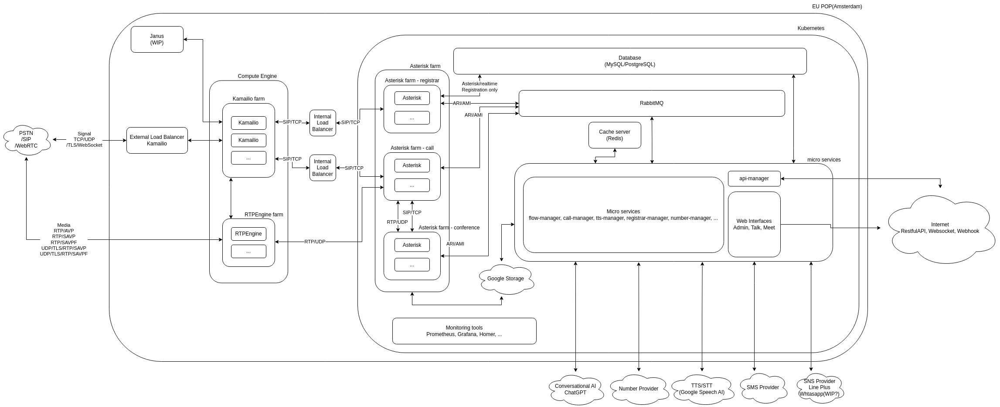

Overview¶
Note
AI Context
Complexity: Low – This is reference documentation describing VoIPBIN’s system architecture. No API calls are specific to this section.
Cost: Free. Architecture documentation is informational only; no operations are performed.
Async: N/A. This section documents the platform structure, not API endpoints.
This page describes VoIPBIN’s high-level system architecture, including the three major layers (API gateway, microservices, real-time communication) and core design principles. Relevant when an AI agent needs to understand the overall platform structure, service categories, or technology stack choices.
VoIPBIN is a cloud-native Communication Platform as a Service (CPaaS) built on modern microservices architecture. The platform provides comprehensive communication capabilities including PSTN calls, WebRTC, SMS, conferencing, AI-powered features, and workflow orchestration.
VoIPBIN is designed from the ground up for scalability, reliability, and developer productivity, enabling businesses to build sophisticated communication solutions through simple API calls.

High-Level System Architecture¶
VoIPBIN consists of three major architectural layers:
+----------------------------------------------------------------------+
| Client Applications |
| (Web Apps, Mobile Apps, Server-to-Server Integrations) |
+------------------------+---------------------------------------------+
| HTTPS/REST API
v
+----------------------------------------------------------------------+
| API Gateway Layer |
| (bin-api-manager) |
| o Authentication & Authorization |
| o Rate Limiting & Throttling |
| o Request Routing & Load Balancing |
+------------------------+---------------------------------------------+
| RabbitMQ RPC
v
+----------------------------------------------------------------------+
| Microservices Layer |
| +--------------+ +--------------+ +--------------+ |
| | Call Manager | | Flow Manager | | AI Manager | |
| +--------------+ +--------------+ +--------------+ |
| +--------------+ +--------------+ +--------------+ |
| |Chat Manager | | SMS Manager | |Queue Manager | |
| +--------------+ +--------------+ +--------------+ |
| +--------------+ +--------------+ +--------------+ |
| |Agent Manager | | Billing Mgr | |Webhook Mgr | |
| +--------------+ +--------------+ +--------------+ |
| ... 34 services |
+------------------------+---------------------------------------------+
|
v
+----------------------------------------------------------------------+
| Real-Time Communication Layer |
| +--------------+ +--------------+ +--------------+ |
| | Kamailio | | Asterisk | | RTPEngine | |
| | (SIP Proxy) | |(Media Server)| |(Media Proxy) | |
| +--------------+ +--------------+ +--------------+ |
+----------------------------------------------------------------------+
+----------------------------------------------------------------------+
| Shared Infrastructure |
| o MySQL Database o Redis Cache o RabbitMQ o Kubernetes |
+----------------------------------------------------------------------+
Architectural Layers¶
1. API Gateway Layer
The API Gateway (bin-api-manager) serves as the single entry point for all external requests:
Authentication: JWT-based authentication for all API requests
Authorization: Permission checks based on customer and agent roles
Request Routing: Routes authenticated requests to appropriate backend services via RabbitMQ RPC
Protocol Translation: Converts HTTP/REST to internal RabbitMQ messaging
Response Aggregation: Collects responses from backend services and returns to clients
2. Microservices Layer
VoIPBIN consists of 34 specialized Go microservices, organized by domain:
Communication Services: * bin-call-manager: Call lifecycle and routing * bin-conference-manager: Conference bridge management * bin-sms-manager: SMS messaging * bin-talk-manager: Real-time chat
AI Services: * bin-ai-manager: AI assistant, transcription, summarization * bin-transcribe-manager: Speech-to-text processing * bin-tts-manager: Text-to-speech synthesis
Workflow Services: * bin-flow-manager: Call flow orchestration and IVR * bin-queue-manager: Call queue management * bin-campaign-manager: Outbound campaign automation
Management Services: * bin-agent-manager: Agent state and presence * bin-billing-manager: Usage tracking and billing * bin-webhook-manager: Webhook delivery * bin-storage-manager: File and media storage
3. Real-Time Communication Layer
See RTC Architecture for detailed information about the VoIP stack.
Core Design Principles¶
VoIPBIN is designed around these key architectural principles:
Microservices Architecture
Service Isolation:
+------------+ +------------+ +------------+
| Service A | | Service B | | Service C |
| | | | | |
| o Domain | | o Domain | | o Domain |
| o Logic | | o Logic | | o Logic |
| o Data | | o Data | | o Data |
+------+-----+ +------+-----+ +------+-----+
| | |
+------------------+------------------+
Message Queue (RabbitMQ)
Domain Isolation: Each service owns its domain logic and data
Independent Deployment: Services can be deployed independently
Technology Flexibility: Services can use different technologies as needed
Fault Isolation: Failure in one service doesn’t cascade
Event-Driven Architecture
Event Flow:
+--------------+ Event +--------------+
| Service |----------------> | Message |
| (Publisher) | | Queue |
+--------------+ +-------+------+
|
+----------------+
| |
v v
+------------+ +------------+
| Subscriber | | Subscriber |
| Service A | | Service B |
+------------+ +------------+
Asynchronous Communication: Services communicate via events
Loose Coupling: Publishers don’t know about subscribers
Scalability: Multiple subscribers can process events in parallel
Reliability: Message queues provide guaranteed delivery
API Gateway Pattern
External Request Flow:
Client App API Gateway Backend Services
| | |
| HTTPS/REST | |
+---------------------------> |
| | 1. Authenticate |
| | 2. Authorize |
| | 3. Route Request |
| | |
| | RabbitMQ RPC |
| +--------------------------->
| | |
| | Response |
| <---------------------------+
| JSON Response | |
<---------------------------+ |
| | |
Single Entry Point: All external traffic goes through one gateway
Security Layer: Authentication and authorization at the edge
Protocol Translation: HTTP to internal messaging protocols
Service Discovery: Gateway knows how to reach all services
Shared Data Layer
Data Architecture:
+------------+ +------------+ +------------+
| Service | | Service | | Service |
| A | | B | | C |
+------+-----+ +-------+----+ +--------+---+
| | |
+----------------+----------------+
| | |
v v v
+-------------------------------------------+
| Redis Cache (Hot Data) |
+-------------------------------------------+
v v v
+-------------------------------------------+
| MySQL Database (Cold Data) |
+-------------------------------------------+
Shared MySQL: Single source of truth for all data
Redis Cache: Fast access to frequently used data
Consistent Schema: All services use common database schema
Transaction Support: ACID guarantees for critical operations
Communication Channels¶
VoIPBIN supports multiple communication channels through dedicated gateways:
Voice Communication:
PSTN: Traditional phone calls via carrier integrations
WebRTC: Browser-based voice and video calls
SIP: Direct SIP trunking for enterprise customers
Messaging:
SMS: Text messaging via carrier integrations
Chat: Real-time chat with WebSocket support
Email: Email notifications and campaigns
AI-Enhanced Communication:
AI Assistants: Voice-enabled AI agents for customer service
Transcription: Real-time and batch speech-to-text
Summarization: Call summarization and insights
Sentiment Analysis: Real-time emotion detection
Integration Capabilities¶
VoIPBIN provides multiple integration methods:
REST API:
Comprehensive REST API for all platform features
OpenAPI/Swagger documentation
SDKs for multiple languages
WebSocket:
Real-time event streaming
Bi-directional media streaming
Live transcription feeds
Webhooks:
Event notifications to external systems
Configurable retry policies
Signature verification for security
Direct Database Access:
Read replicas for reporting
Analytics database for business intelligence
Key Architectural Benefits¶
VoIPBIN’s architecture is designed to deliver these advantages:
Scalability
Horizontal Scaling: Add more service instances to handle increased load
Independent Scaling: Scale only the services that need more capacity
Auto-Scaling: Kubernetes automatically scales based on metrics
Global Distribution: Deploy services across multiple regions
Reliability
Fault Isolation: Issues in one service don’t affect others
Circuit Breakers: Prevent cascading failures
Automatic Failover: Kubernetes restarts failed containers
SIP Session Recovery: Maintain calls even when servers crash
Message Persistence: RabbitMQ ensures no messages are lost
Security
API Gateway Security: All authentication at the edge
Service Isolation: Services communicate via internal network only
Encryption: TLS for all external communication
Secret Management: Kubernetes secrets for sensitive data
Audit Logging: Complete audit trail of all operations
Developer Productivity
Simple REST API: Easy to integrate with any application
Comprehensive Docs: Detailed documentation with examples
Webhook Events: Real-time notifications of system events
Test Environment: Sandbox for development and testing
SDK Support: Official SDKs for popular languages
Operational Excellence
Centralized Logging: All logs aggregated in one place
Metrics & Monitoring: Prometheus metrics for all services
Distributed Tracing: Track requests across services
Health Checks: Automated health monitoring
Zero-Downtime Deploys: Rolling updates without service interruption
Service Dependencies¶
VoIPBIN services have well-defined dependencies for coordinated operations:
Core Service Dependencies:
+-----------------------------------------------------------------+
| bin-api-manager |
| (API Gateway) |
| ------------------------------------------------------------- |
| Depends on: ALL backend services for RPC routing |
+-----------------------------------------------------------------+
|
+-----------------------+-----------------------+
| | |
v v v
+-------------+ +-------------+ +-------------+
|bin-call-mgr | |bin-flow-mgr | |bin-ai-mgr |
+------+------+ +------+------+ +------+------+
| | |
| | |
v v v
+-------------+ +-------------+ +-------------+
|bin-billing | |bin-call-mgr | |bin-transcribe|
|bin-webhook | |bin-queue-mgr| |bin-tts-mgr |
|bin-number | |bin-ai-mgr | |bin-pipecat |
+-------------+ +-------------+ +-------------+
Key Dependency Patterns:
Call Processing Chain:
bin-call-manager
+--> bin-flow-manager (IVR and call flows)
+--> bin-billing-manager (usage tracking)
+--> bin-webhook-manager (event notifications)
+--> bin-transcribe-manager (call transcription)
+--> bin-number-manager (phone number lookup)
AI Voice Pipeline:
bin-pipecat-manager
+--> bin-ai-manager (LLM coordination)
+--> bin-call-manager (call control)
+--> bin-transcribe-manager (STT)
Flow Orchestration:
bin-flow-manager
+--> bin-call-manager (call actions)
+--> bin-queue-manager (queue operations)
+--> bin-ai-manager (AI interactions)
+--> bin-conference-manager (conference bridges)
Infrastructure Monitoring:
bin-sentinel-manager
+--> bin-call-manager (SIP session recovery events)
Circular Dependencies:
VoIPBIN avoids circular dependencies through:
Event-Driven Decoupling: Services publish events, others subscribe
Gateway Orchestration: API Gateway coordinates cross-service operations
Shared Data Layer: Services share data via MySQL, not direct calls
Technology Stack¶
VoIPBIN is built on modern, proven technologies:
Backend Services:
Language: Go (Golang) for all microservices
API Framework: Gin for HTTP routing
RPC: RabbitMQ for inter-service communication
Database: MySQL for persistent storage
Cache: Redis for session and hot data
Real-Time Communication:
SIP Proxy: Kamailio for SIP routing
Media Server: Asterisk for call processing
Media Proxy: RTPEngine for RTP handling
Infrastructure:
Container Runtime: Docker for containerization
Orchestration: Kubernetes (GKE) for container management
Cloud Provider: Google Cloud Platform
Monitoring: Prometheus + Grafana for metrics
Logging: ELK stack for centralized logging
Message Queue:
Broker: RabbitMQ for async messaging
Event Bus: ZeroMQ for pub/sub events
This architecture enables VoIPBIN to deliver enterprise-grade communication services at scale while maintaining developer simplicity and operational excellence.